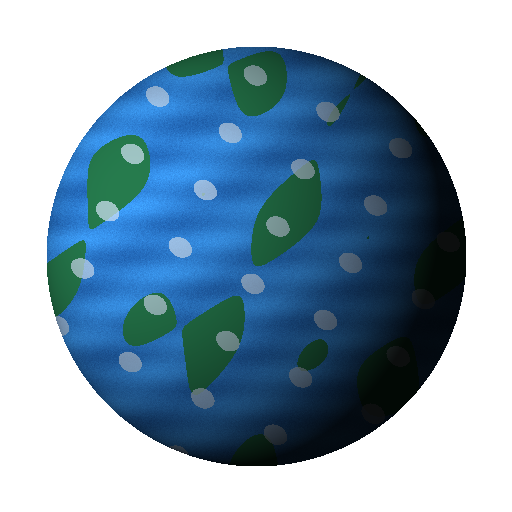
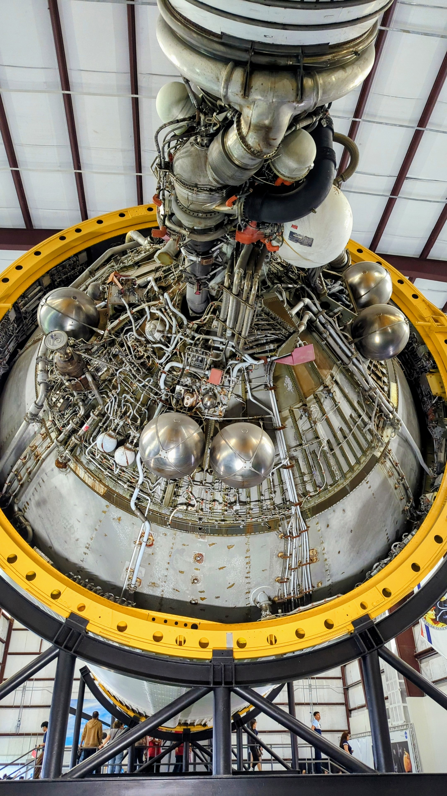

TANGRAM EDUCATIVO / CARLProfessor João Faustino Junior
EXPLORADOR ESPACIAL
🇧🇷🇺🇸
GUIA DO EXPLORADOR
🗺️ Mapa do CARL
Conheça os oito ambientes do observatório digital. Escolha um destino para começar sua exploração.
CARL — Explorador do Cosmos · Tangram Educativo
Astros1 de 8
CARL · OBSERVATÓRIO INTERATIVO
O Universo em números.
Explore o Cosmos.
Trilha e efeitos originais sintetizados · não são sons captados no espaço

Toque na imagem para ampliar · Deslize para mudar
Terra
Compare duas massas e dimensões conhecidas. A comparação é descritiva e não está em escala.
Laboratório de escalas
Viagem da Luz
Quanto tempo um sinal luminoso levaria para atravessar o espaço?
✦ MISSÃO · VIAGEM DA LUZSol → Terra
☀
●
Pronto para a partida
Imagem astronômica ilustrativa · NASA / ESA
Selecione um destino.
Distância adotada
Tempo de percurso da luz
A animação tem duração fixa e não representa a escala de distâncias nem a velocidade real. Para planetas, usamos distâncias orbitais médias ao Sol; posições e distâncias instantâneas variam. A luz viaja no vácuo a 299.792,458 km/s.
OBSERVAR É OLHAR PARA O PASSADO
Máquina do Tempo Cósmica
A luz leva tempo para viajar. Quando observamos objetos distantes, recebemos informações de épocas anteriores.
Galáxia de Andrômeda · fotografia astronômica processada
Estamos vendo luz emitida há aproximadamente2,54 milhões de anos
A luz que chega hoje de Andrômeda partiu de lá há cerca de 2,54 milhões de anos.
Equivale a aproximadamente 1,079 bilhão de km/h no vácuo. Compare com velocidades familiares e descubra a diferença de escala.
☀
✦
PANORAMA · SISTEMA SOLAR
Uma estrela. Oito planetas.
Explore o conjunto e toque em um planeta para descobrir sua distância média do Sol.
Tempo simulado: 0 dias terrestres
Translação com períodos relativos reais; órbitas circulares e dimensões fora de escala. A rotação é indicada por um pequeno marcador em cada planeta, com velocidade proporcional ao período sideral.
Uma janela para o céu de qualquer noite: escolha uma data, explore constelações e guarde sua carta celeste.
CARL ✧ ATLAS DO CÉU ✧
Uma janela para o universo · zênite ao centro · horizonte na borda
TANGRAM EDUCATIVO · OBSERVATÓRIO CARL
✦ Toque em uma estrelaExplore os astros identificados na carta celeste.
Toque nos pontos do mapa ou escolha pelo nome. As coordenadas são o “endereço” astronômico da estrela.
✦ OBSERVATÓRIO CELESTE · CARTAS DO TEMPO ✦
✦ PERSONALIZE SUA OBSERVAÇÃO
Ano 0 = 1 a.C. Para datas antigas, escolha mês/dia no calendário e digite o ano aqui. Reconstrução aproximada.
21h
Exemplo inicial: São Paulo, SP
Carta aproximada com estrelas de referência, precessão simplificada e linhas de constelações. Para épocas antigas, calendário, fuso histórico e movimento estelar introduzem incertezas. Norte no topo, leste à esquerda. Não é uma fotografia nem um planetário completo. A localização é usada somente neste navegador, após sua autorização.
HISTÓRIA · HUMANIDADE E CÉU
O céu como calendário e caminho
COMETAS · HISTÓRIA DA ASTRONOMIA
UMA VISITA QUE ATRAVESSA OS SÉCULOS
O cometa Halley
Observado por diferentes civilizações, o cometa 1P/Halley retorna às proximidades do Sol aproximadamente a cada 76 anos. Edmond Halley relacionou registros históricos e previu seu retorno, confirmado em 1758.
1066Representado na Tapeçaria de Bayeux1986Última passagem pelo periélio2061Próximo periélio previsto
Investigue: por que o intervalo entre as passagens do Halley não é exatamente igual?
Satélites, sondas e telescópios ampliaram a observação do céu; a navegação moderna usa sinais de satélites e relógios precisos.
Os conhecimentos do céu foram desenvolvidos por muitas culturas, com tradições próprias. Esta é uma introdução histórica, não uma cronologia exaustiva.
Nossa casa na Via Láctea
Onde estamos entre centenas de bilhões de estrelas? Explore as regiões luminosas e descubra as escalas galácticas.
CENTRO GALÁCTICO
Uma galáxia de verdade
Andrômeda (M31) vista por telescópios. É outra galáxia espiral, não uma fotografia externa da nossa Via Láctea.
Ilustração científica esquemática da Via Láctea, vista de fora. Os braços e as posições são simplificados; não existe fotografia externa da galáxia inteira.
Observação científica
De onde vêm as imagens do Universo?
Fotografias de sondas, observações em diferentes comprimentos de onda e ilustrações científicas não são a mesma coisa. Antes de apresentar uma imagem como observação real, é necessário verificar sua origem, seus créditos e o tipo de processamento utilizado.
Acervo visual atual do CARL: ilustrações didáticas. A substituição por registros científicos será feita individualmente, com identificação da missão, crédito e classificação da imagem. Nem todo corpo celeste possui uma fotografia direta.
CARL · Museu espacial
A conquista do espaço
Das primeiras órbitas à exploração de outros mundos. Selecione uma missão para conhecer sua história, seus protagonistas e suas descobertas.

ACERVO PESSOAL · HOUSTON
Saturn V: engenharia da conquista lunar
Um olhar de perto para a complexidade dos sistemas de propulsão do foguete Saturn V, da família de lançadores que levou as missões Apollo à Lua. O exemplar em exposição não deve ser confundido com o veículo específico da Apollo 11.
Fotografia: Acervo pessoal — Professor João Faustino Junior · Space Center Houston, Texas
Para investigar: por que um foguete utiliza tantas tubulações, válvulas e conexões?
Datas e acontecimentos históricos resumidos para fins educativos. Os registros são incorporados gradualmente, com identificação de autoria, data e licença. Fotografias de réplicas são identificadas como tal.
CARL · CIÊNCIA EM ANDAMENTO
Exploradores que continuam sua jornada
Conheça veículos robóticos e sondas em atividade, suas perguntas científicas e suas descobertas. Toque em uma missão para revelar detalhes e acessar fotografias oficiais.
← Deslize para conhecer as missões →
Situação consultada em novembro de 2026. “Em viagem” não significa que a sonda já chegou ao destino. As imagens dos cartões são fotografias ou ilustrações oficiais, identificadas individualmente com seus créditos.
🇧🇷 CARL · BRASIL NO ESPAÇO
O Brasil também explora o universo
Centros de lançamento, foguetes, satélites, astronautas e pesquisadores fazem parte da história espacial brasileira. Descubra os projetos e as pessoas por trás dessa jornada.
Localizado próximo à linha do Equador, oferece vantagens geográficas para determinados tipos de lançamento. É um centro espacial brasileiro, não um foguete.
Amazônia vista do espaçoImagem do sensor MODIS/NASA (2002), exemplo de monitoramento ambiental — não foi captada pelo Amazônia-1.Ver imagem e créditos ↗
Programa de satélites de observação da Terra desenvolvido em cooperação internacional. Suas imagens contribuem para o estudo do território, da vegetação e do ambiente.
Desmatamento em Novo Progresso (PA)Imagem CBERS-4 / INPE (2017–2018): floresta, pastagens e áreas desmatadas em composição de falsa cor.Ver imagem e créditos ↗Fumaça das queimadasRegistro CBERS-4 / INPE (2019) mostrando fumaça de queimadas na Amazônia.Ver imagem e créditos ↗
Os foguetes de sondagem, como os da família Sonda e o VSB-30, transportam experimentos em voos suborbitais. O VLS foi um projeto histórico de lançador orbital.
O físico brasileiro participou de pesquisas fundamentais sobre partículas subatômicas, incluindo o méson píon. Sua trajetória conecta a ciência brasileira ao estudo da radiação cósmica.
Missões, pessoas e projetos históricos são apresentados com suas funções específicas. Para notícias e situação atual dos programas, consulte os órgãos oficiais indicados.
CARL · CONSULTA CIENTÍFICA
Glossário do universo
Pesquise uma palavra para compreender os conceitos usados nas explorações do CARL.
Nenhum termo encontrado. Experimente outra palavra.
.jpg?width=1200)
 COMETAS · HISTÓRIA DA ASTRONOMIA
COMETAS · HISTÓRIA DA ASTRONOMIA


.jpg?width=800)
.jpg?width=800)